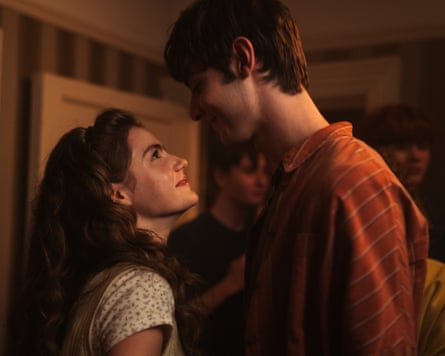
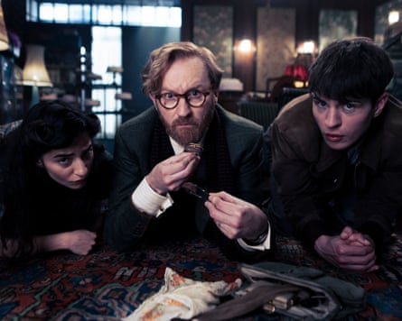
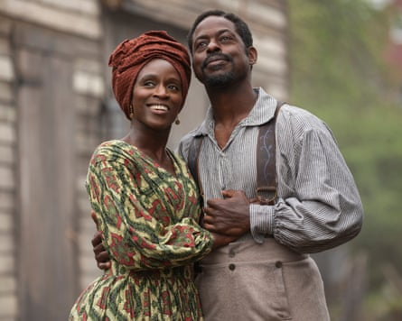
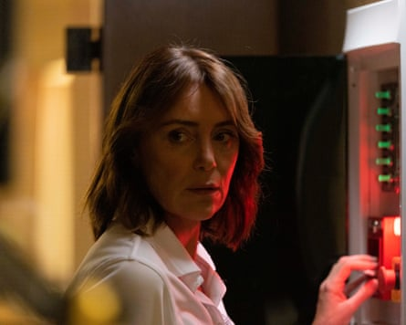
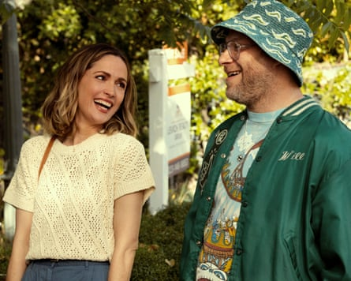
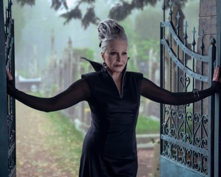
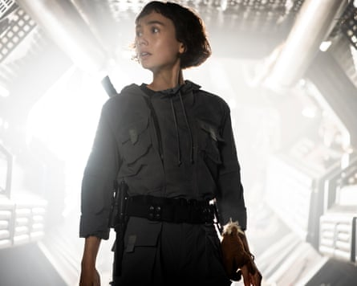
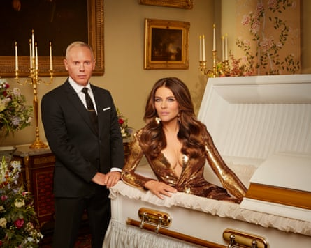
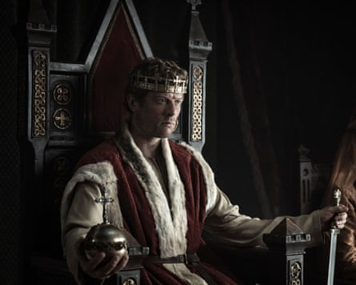

Squid Game
The big one. The uberviolent South Korean juggernaut – still Netflix’s most popular show ever – reaches the end point … and Player 456 is still in the game. What will happen after the armed rebellion? Will he figure out he’s playing alongside Frontman? And will he make it out alive? The show’s creator Hwang Dong-hyuk opened up about the denouement this week, telling fans it’s bleaker than ever. Apparently after watching, we’ll be left shaking and asking ourselves: “How much humanity do I have left in me?” One thing’s for sure: there’ll be no let-up. Expect gore galore. Out now, Netflix
Too Much

Ever-excellent … Meg Stalter in Too Much.Photograph: Ana Blumenkron/Netflix
The one Lena Dunham fans have been waiting for. Eight years after the end of Girls , she makes a welcome return to television. The ever-excellent Megan Stalter – AKA the hilariously ditzy agent Kayla in Hacks – plays Jess, an American ad executive who is obsessed with classic British love stories. When her deadbeat boyfriend leaves her for an influencer who makes lipgloss – “no one is fucking an influencer in the works of Jane Austen!” – she decides to take her broken heart to London in “the Kingdom of United” and start over. When she arrives, she’s devastated to discover that her new “estate” isn’t quite the verdant paradise she dreamed it would be. Promptly, of course, Jess meets her very own Mr Darcy – indie rocker Felix. 10 July, Netflix
The Institute
Gifted … Joe Freeman as Luke Ellis in The Institute.Photograph: Chris Reardon/MGM+
A teenager is panicked to find himself waking up in a mysterious institution full of youngsters who possess special abilities, and he has every reason to be scared – he’s in a Stephen King adaptation. Given that the author was one of the inspirations for Stranger Things, and this tale of a totalitarian bootcamp for telekinetic children feels as though it’s drawing on Eleven’s backstory, it has the sense of the author coming full circle. But if this stays true to his 2019 novel, we are in for plenty of creeping dread and commentary on Trump’s America. 13 July, Prime Video
Mix Tape
Gorgeous … Florence Hunt and Rory Walton-Smith in Mix Tape.Photograph: Cait Fahy
A gorgeous will-they-won’t-they romance that spans decades. Daniel is a music journo who has harboured a secret lifelong devotion to his first love Alison, who mysteriously disappeared from their home town Sheffield when they were teens. Decades later, they find each other online and, though they’re both married, start sending each other tunes from their youth. The stars – Jim Sturgess and Rory Walton-Smith as older and younger Daniel, and Teresa Palmer and Florence Hunt as older and younger Alison – are wonderful across the board, and the soundtrack is stuffed with 80s bangers from New Order to the Cure. It’s a yearning look at what it’s like to marry the wrong person – and why first love might be right all along. 15 July, BBC Two
Bookish
Crime-solving has never been more fun … (from left) Buket Komur as Nora, Mark Gatiss as Gabriel Book and Connor Finch as Jack in Bookish.Photograph: Nicolas Velter/UKTV
Such is the prevalence of cosy crime – and the star wattage of Mark Gatiss – that this postwar comedy-drama has been recommissioned before the first season has even started. Gatiss stars as Gabriel Book, owner of Book’s bookshop, a kooky gent with a passion for puzzles – what else! – who helps the police solve murder cases. But the plot thickens when he gives mysterious ex-con Jack a job in the shop and lets him move into their attic (“He’s like Mrs Rochester – only slightly more butch!”). An arch, high camp slice of crime-solving fun. 16 July, U&Alibi
Washington Black
Passion project … Sharon Duncan-Brewster and Sterling K Brown in Washington Black.Photograph: Chris Reardon/Disney
Based on the beloved novel by Esi Edugyan, this is the story of how a boy called George Washington ‘Wash’ Black escapes from slavery. At the age of 11, he is spotted poring over a feat of engineering and plucked from the cotton fields by a white scientist named Titch who is trying to make an almighty flying machine. Soon Titch spots his talent for drawing and keeps him on as an aide until he’s grown up – but when he tries to leave, Titch’s brother sets a bounty hunter on him. Sterling K Brown stars and executive produces what is clearly a passion project. 23 July, Disney+
The Assassin
Tense, action-packed fun … Keeley Hawes as Julie in The Assassin.Photograph: Panos Kostouros
Keeley Hawes is a retired assassin on holiday with her son ( Freddie Highmore ) – and he wants answers. The questions he’s nurturing on their tense Greek island sojourn: Why are you so frustratingly distant? How do you explain this unexpected new information on my paternity? Wait, who are those terrifying people? And what do you mean we have to go on the run? Should be lots of tense, action-packed fun. July, Prime Video
Destination X
Bereft fans who are desperately missing Race Across the World and those who are giddy with anticipation for The Celebrity Traitors in autumn – ie, all of us – should look no further than Destination X. This wild adventure gameshow overseen by Rob Brydon takes contestants, lumps them in a “blacked-out” bus and drives them to a mystery location somewhere in Europe. Turning the whole continent into essentially a giant chess board, they have to take on challenges to try to establish where they are – and the closest guess gets to stay in the game. July, BBC iPlayer
Human
Gamechanger … Ella Al-Shamahi in Human.Photograph: BBC Studios
Yes, humanity is the dominant animal on Earth. But since homo sapiens’ development 250,000 years ago in Africa, we have no written record of 98% of our journey. Paleoanthropologist Ella Al-Shamahi tries to change that in this five-part BBC science series, by using DNA breakthroughs and fossil evidence to dive into our deep historical past. If its claim that it will provide a totally new perspective on what makes us human is to be believed, this will be a gamechanger. July, BBC One
Unforgivable
From Cracker to Time, a Jimmy McGovern show is always a must-watch – even one as harrowing as this. Anna Friel stars as Anna, whose brother Joe (a truly devastating Bobby Schofield) sexually assaulted his young nephew Tom a few years ago. As we meet Joe, he is leaving prison a shell of a man and goes to stay at a halfway house run by Sister Katherine, played by Anna Maxwell Martin, for therapy and horrifying realisations about the abuse he himself has faced. A brutal look at a family torn asunder. July, BBC One
Platonic
Incredible chemistry … Rose Byrne and Seth Rogen in Platonic.Photograph: Paul Sarkis/AP
This super fun buddy-comedy starring Seth Rogen, Rose Byrne and their incredible chemistry has flown under the radar but it’s well worth catching up ahead of its second outing. Best mates Sylvia and Will have always got up to high jinks … and this season, there will be mishaps from exploding eyeballs to kayaking through rivers of excrement, plus one of the funniest scenes of the year courtesy of Sylvia’s rogue dog. 6 August, Apple TV+
Wednesday
Ab fab … Joanna Lumley as Grandmama in Wednesday.Photograph: Owen Behan/Netflix
The hotly anticipated follow-up to Tim Burton’s staggeringly popular Addams Family spin-off sees Steve Buscemi join as the new headteacher of Wednesday Addams’ school, Nevermore Academy, and Joanna Lumley pitch up as her grandmother. Paired with the return of Jenna Ortega’s award-winningly intense take on the titular character, yet more creepy, kooky and altogether ooky fun awaits. 6 August, Netflix
Alien: Earth
Into the unknown … Alien: Earth.Photograph: Copyright 2025, FX. All Rights Reserved.
Noel Hawley, the brains behind the ace TV adaptation of the Coen Brothers’ Fargo, takes the helm for this small-screen leap into the world of Ridley Scott’s sci-fi classic. It’s set on earth and serves as a prequel to the original 1979 movie, Alien. When a space ship crash lands, the contents turn out to not exactly delight people who like to go through life without an alien clasped to their face. Given what Hawley achieved with Fargo, this could go down as the greatest outing for Scott’s franchise in decades. 12 August, Disney+
The Twisted Tale of Amanda Knox
Gripping … Grace Van Patten (centre) in The Twisted Tale of Amanda Knox.Photograph: Andrea Miconi/Disney
Disney’s dramatisation of Knox’s 2007 conviction and later acquittal of the murder of Meredith Kercher sees Knox herself feature as an executive producer, alongside Monica Lewinsky. Sharon Horgan stars as Knox’s mum and Grace Van Patten plays Knox, after her recent role in steamy US drama Tell Me Lies. Given how gripped the world was by the last telling of this tale – Netflix’s 2016 film, Amanda Knox – it is sure to be all anyone talks about for a month. 20 August, Disney+
Hostage
Classic globetrotting fare … Suranne Jones and Julie Delpy in Hostage.Photograph: Des Willie/PA
Suranne Jones and Julie Delpy star as the liberal British prime minister Abigail Dalton and populist French president Vivienne Toussaint in this classic slice of globetrotting Netflix fare. When Dalton’s husband Alex is abducted on a Médecins Sans Frontières mission in French Guiana, the only one who can ensure his release and safe return is Toussaint. But the abductors have something dodgy on her too … 21 August, Netflix
Frances Bourgeois: Rocket Man
Dream chaser … Frances Bourgeois: Rocket Man.Photograph: Channel 4
Move over, Elton! The most excitable man on social media, trainspotter Frances Bourgeois, ditches his biggest passion – squealing with glee at passing locomotives – to pursue his other childhood obsession: becoming an astronaut. He gets G-force training from none other than Tim Peake, Mr Space Oddity himself, and sees if he has what it takes to pass muster in space. Sure to be hours of unadulterated joy in a non-gravity environment. August, Channel 4
The Inheritance
Expect big, backstabby things … Rob Rinder and Elizabeth Hurley in The Inheritance.Photograph: Channel 4
Like The Traitors meets probate (stay with me), this Channel 4 show sees contestants compete to inherit a fortune left by a glamorous benefactor known only as “the Deceased”. Viewers will know her better, however, as “Liz Hurley”. Rob Rinder draws on his legal past to play her will’s executor, and leads contestants through challenges, while they attempt to convince each other that they should be the sole heir to the cash. Made by the company behind the Winkleman smash, expect big, backstabby things. August, Channel 4
King & Conqueror
Epic … James Norton and Indy Lewis in King & Conqueror.Photograph: Lila Jons/BBC/Rabbit Track Pictures
Jaime Lannister is William the Conqueror in this BBC historical epic. Or at least Game of Thrones’s Nikolaj Coster-Waldau dives back into the land of dingily lit castles to tell the tale of the events leading up to the Battle of Hastings. James Norton, Juliet Stevenson and Clémence Poésy also star in an eight-parter that shows the clash that set the course of a continent for 1,000 years. Brace yourself for the arrow through the eye scene! August, BBC One
The Narrow Road to the Deep North
Throbs with desire … Jacob Elordi as Dorrigo Evans and Odessa Young as Amy Mulvaney in The Narrow Road to the Deep North.Photograph: Ingvar Kenne/BBC/Curio Pictures/Sony
Jacob Elordi is Dorrigo, a young medic engaged to be married and about to be shipped off to war when he has a love affair with his uncle’s wife, Amy. He falls for her utterly when she shows him her favourite three-word Sappho poem, “You burn me”. Across two timelines, we see the horrors of war as he ends up a PoW in Thailand forced to build the train lines that became known as the “death railway”. We also see him as an older surgeon (played by Ciarán Hinds) still haunted by the hell of his capture and the love of Amy. Tender, sexy TV that almost throbs with desire – for what you can’t have, and what you once had. TBC, BBC One/iPlayer
The Pitt

The new ER? … Noah Wyle in The Pitt.Photograph: Max/Warrick Page
Like ER crossed with 24, this thrilling medical drama plays out in real time hour by hour in one busy and very bloody shift for the doctors and nurses of Pittsburgh Trauma Medical Hospital. Created by John Wells of ER renown, and starring Noah Wyle (ditto – Carter fans assemble!) it’s a high-octane reunion indeed. Wyle plays Dr “Robby” Robinavitch, the attending who has to contend with constant calamities, rats on the loose in the ward and multiple newbies who are out of their depth … and then there’s an emergency at a festival nearby. Already one of the most gushed-about shows of the year in the US, The Pitt urgently needs a UK air date – and stat! Date and channel TBC